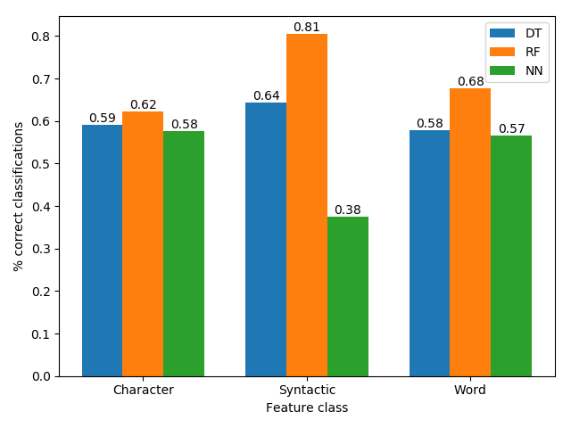

Introduction
Our project deals with author identification. Our goal was to build a program that studies books by several authors and then is able to receive a new text written by one of them and identify the writer. We used books by ten authors: Jane Austen, Charlotte Brontë, Lewis Carroll, Charles Dickens, Fyodor Dostoevsky, Herman Melville, Robert Louis Stevenson, Bram Stoker, Leo Tolstoy and Jules Verne. The same program can be used for other authors (or other books by the same authors).
Approach and Method
Corpus
All the texts we used came from the Project Gutenberg database. As mentioned above, we used books by ten authors. For each author we downloaded about 3-4 books and divided them to chapters. Each chapter was then treated as a separate, independent text, which allowed as to get a lot of data from a rather small number of books. The data was then separated into training data and test data in one of two ways: either taking 80% of the chapters to be the training data and 20% of the chapters to be the test data, or taking one book by each of the authors to be in the test data, and leave the other books to be the training data (we called that "split by book").
Learning
Each text (i.e. a chapter of a book) is represented by a feature vector. We defined three types of features:
Character-Specific Features
- Relative frequency of "special characters" (~, @, #, $, %, etc.) in the text
- Relative frequency of alphabetic characters in the text
- Relative frequency of digits in the text
- Relative frequency of spaces in the text
- Ratio of spaces to white space (the number of times the space character appears in the text divided by the number of times any kind of space character appears (tabs, newlines, etc.).
- Ratio of tabs to white spaces
Word-Specific Features
- Relative frequency of short words (length under 3 characters) in the text
- Relative frequency of long words (length over 9 characters) in the text
- Relative frequency of unique words in the text
- Average word length
- Average sentence length by words
- Average sentence length by characters
- Number of function words
Syntactic Features
The assumption is that these features capture enough of the author's style so that after studying many text by a specific author the program can recognise his or her style in a different text.
To Identify the author of the texts in the test data we used three AI algorithms: Decision Tree, Random Forest and Nearest Neighbour.
Results
First, we compared to different algorithms we used. The results in blue are those we get by splitting the data by chapter (80% training, 20% test), and the results in orange are those we get when we split by book.
We wanted to check which type of features is the most effective, so we ran the program with only one type at a time (splitting the data by chapter):
Another thing we wanted to check was how the number of authors influenced the results:
Conclusions
The first conclusion that can be reached is that the Random Forest algorithm appears to be the best algorithm for this task.
Examining the features comparison graphs, we can see that the syntactic features are the most effective ones for the Random Forest algorithm (in fact using them alone we already can get 80% success!), but they are the worst features for the Nearest Neighbour algorithm. It is interesting to compare that to the results we get when we use only the character-based features: For two out of the three algorithms we get the worst results, but on the other hand they give "stable" results, meaning they give almost the same results for all the algorithms. Our conclusion is what we assumed to be true from the beginning - combining different kinds of features is the best approach.
When examining the first graph we can also see that splitting by chapter gives as better results than splitting by book. This is probably because when we split by chapter the program might have in the training data and the test data different chapters of the same book. Since every book is different from the others, even if they were written by the same author, it is easier to recognise the author if the program was trained on chapters from the same book. However, even when splitting by book we got pretty good results (65% for the best algorithm). We believe that learning more than 3-4 books by each author may lead to better generalisations and therefore better results, even when we split by book.
The last graph tells us that when the number of authors grows it gets harder to identify the right one, as we expected.
Additional Information
References
List any references from the literature you have consulted or used.
- de Roc Boronat, Carrer, and Leo Wanner. "On the Relevance of Syntactic and Discourse Features for Author Profiling and Identification." EACL 2017
- Skoglung, Simen. "Authorship Identification of Research Papers"
- Stanford CoreNLP dependency parsing tool